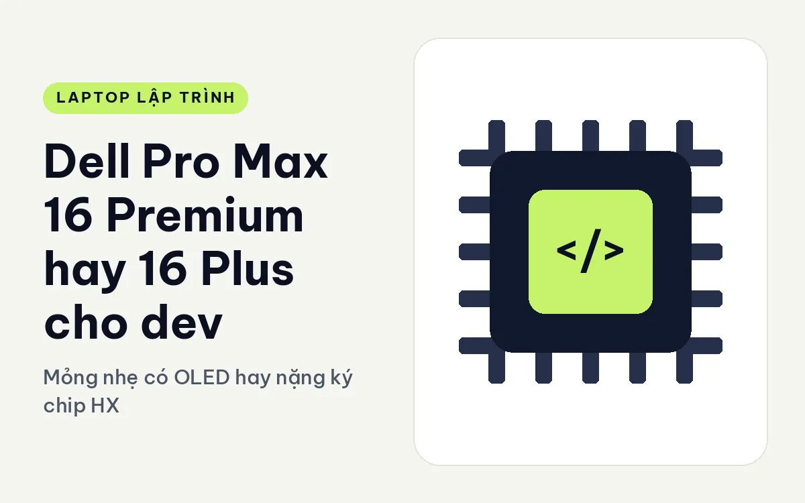
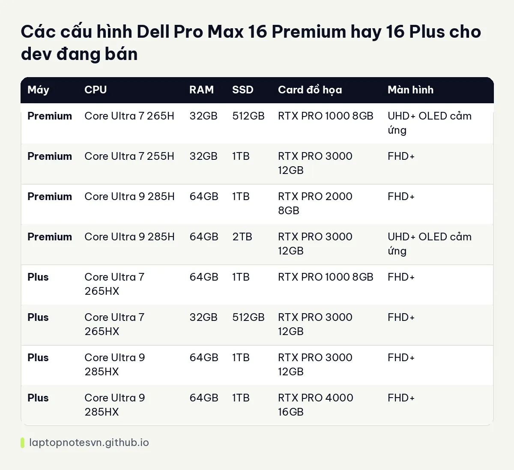

Dell Pro Max 16 Premium hay 16 Plus cho dev - Mỏng nhẹ có OLED hay nặng ký chip HX

Trong dòng 16 inch của Dell, Premium và Plus là hai nhánh cao cấp đi theo hai hướng ngược nhau. Premium cố gắng gọn nhẹ, có màn OLED cảm ứng. Plus chọn sức mạnh, chấp nhận nặng hơn và dày hơn. Người viết code gặp cả hai trong danh sách khi ngân sách đã mở rộng, và câu chọn thường rơi vào chuyện mình cần di chuyển nhiều hay cần sức máy nhiều hơn.
Bên nhẹ hơn là Dell Pro Max 16 Premium MA16250.
Bên mạnh hơn là Dell Pro Max 16 Plus MB16250.
Mang đi làm thì máy nào gọn hơn
Premium nặng khởi điểm 2,19 kg, kích thước 353,8 x 240,28 mm, pin 96Wh. Plus nặng 2,55 kg, kích thước 360 x 258,6 x 30,9 mm, cũng 96Wh. Chênh khoảng 360 gam, và chiều dày 30,9 mm của bản Plus cho thấy đây là thân máy lớn hơn hẳn.
Cổng của Premium gồm Thunderbolt 4 và Thunderbolt 5, HDMI 2.1, RJ45 và có Wi-Fi 7. Plus có 2 cổng Thunderbolt 5 và 1 Thunderbolt 4, 2 USB-A, HDMI, RJ45 2.5GbE và khe SD. Nếu bạn hay chép ảnh từ thẻ nhớ hay đọc dữ liệu từ thiết bị ngoài, khe SD của Plus tiện hơn.
RAM của Premium là LPDDR5x với 32GB hoặc 64GB. Plus dùng DDR5 và có nắp phục vụ nhanh ở đáy máy. Hai kiểu RAM này khác nhau về cách nâng cấp: LPDDR5x tiết kiệm điện và có tốc độ cao nhưng khó thay, còn DDR5 trên Plus thay được dễ hơn. Chuyện này đáng xét nếu bạn muốn dùng máy nhiều năm.
Cấu hình Dell Pro Max 16 Premium so với 16 Plus
| Máy | CPU | RAM | SSD | Card đồ họa | Màn hình |
|---|---|---|---|---|---|
| Premium | Core Ultra 7 265H | 32GB | 512GB | RTX PRO 1000 8GB | UHD+ OLED cảm ứng |
| Premium | Core Ultra 7 255H | 32GB | 1TB | RTX PRO 3000 12GB | FHD+ |
| Premium | Core Ultra 9 285H | 64GB | 1TB | RTX PRO 2000 8GB | FHD+ |
| Premium | Core Ultra 9 285H | 64GB | 2TB | RTX PRO 3000 12GB | UHD+ OLED cảm ứng |
| Plus | Core Ultra 7 265HX | 64GB | 1TB | RTX PRO 1000 8GB | FHD+ |
| Plus | Core Ultra 7 265HX | 32GB | 512GB | RTX PRO 3000 12GB | FHD+ |
| Plus | Core Ultra 9 285HX | 64GB | 1TB | RTX PRO 3000 12GB | FHD+ |
| Plus | Core Ultra 9 285HX | 64GB | 1TB | RTX PRO 4000 16GB | FHD+ |
Nhìn bảng thấy ngay ba điểm. Thứ nhất, chỉ Premium có tuỳ chọn màn OLED cảm ứng. Thứ hai, chỉ Plus có RTX PRO 4000 16GB, phần VRAM rộng nhất trong cả hai máy. Thứ ba, hai máy có điểm chung ở RTX PRO 3000 12GB, nên nếu bạn chỉ cần mức VRAM này, Premium nhẹ hơn là lựa chọn hợp lý hơn.

Đoạn này cũng là lúc nhắc chuyện RAM: cả hai đều có bản 64GB, nên nếu bạn chủ yếu thiếu RAM chứ không thiếu GPU, hai bên ngang nhau. Chi tiết cách tính nằm ở bài về RAM cho lập trình viên.
Web, mobile hay backend thì nghiêng về máy nào
- Dev mobile, web, backend cần màn đẹp: Premium OLED UHD+ cho chữ sắc, màu chuẩn, làm việc lâu thoải mái.
- Dev AI, thử mô hình lớn cục bộ: Plus với RTX PRO 4000 16GB là lựa chọn duy nhất có VRAM cao nhất.
- Biên dịch nặng, build nhiều giờ: chip HX của Plus chịu tải lâu tốt hơn chip H của Premium.
- Hay đi gặp khách mang theo máy: Premium nhẹ hơn, mỏng hơn.
Màn hình và mắt của người viết code
Dev nhìn màn hình tám đến mười hai tiếng mỗi ngày, nên chất lượng hiển thị đáng được đưa vào quyết định. Tấm OLED UHD+ trên Premium cho độ tương phản rất sâu, chữ rõ nét, và cảm ứng giúp thao tác nhanh khi bạn đọc tài liệu hoặc kéo biểu đồ. Cái giá là OLED thường phản chiếu nhiều hơn tấm mờ, và bạn nên đặt độ sáng vừa phải để mắt đỡ mỏi.
Bản FHD+ trên cả hai máy là lựa chọn an toàn hơn cho người ưu tiên thời lượng pin và độ bền màn. Với tập code và terminal, FHD+ trên 16 inch vẫn đủ rộng để mở hai khung song song. Nếu bạn làm đồ họa hoặc thiết kế giao diện, màn OLED mới thực sự đáng tiền.
Hai máy đều có Wi-Fi 7 và cổng RJ45, nên chuyện kết nối mạng không phải điểm phân biệt. Thêm một lưu ý nhỏ: bản Plus chỉ có tuỳ chọn FHD+ trong danh sách đang bán, vì vậy nếu OLED là điều kiện bắt buộc, Premium là lựa chọn duy nhất của hai máy.
Khi nào lấy Dell Pro Max 16 Premium, khi nào lấy 16 Plus
Chọn Premium nếu bạn muốn 16 inch với màn OLED, cần di chuyển vừa phải và mức GPU tối đa RTX PRO 3000 đã đủ. Trang Pro Max 16 Premium cho lập trình mô tả kỹ hơn.
Chọn Plus nếu hiệu năng là ưu tiên số một, bạn cần GPU 16GB VRAM hoặc nhiều cổng nhanh, và máy chủ yếu nằm trên bàn. Hãy chấp nhận ba lô nặng hơn và chiếc sạc to hơn.
Nếu còn phân vân giữa hai bản cùng mức card, hãy nghiêng về máy nhẹ hơn, vì sức mạnh dư ra chỉ có ích khi tải thực sự đạt tới ngưỡng đó. Cách quyết nhanh: nếu bạn mang máy ra khỏi nhà ít nhất ba ngày một tuần, Premium. Nếu máy ở một chỗ, Plus.
Đăng ngày 09/11/2026